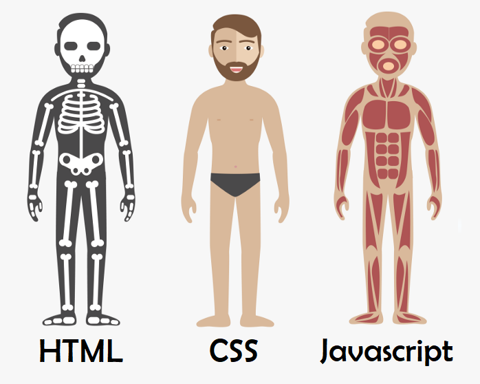

JavaScript & The DOM
JavaScript and its relationship to HTML and CSS
The relationship between JavaScript, HTML and CSS is that they are the main languages used in the front-end in our application, i.e. they are used by the client side in his browser. The difference is that HTML and CSS are not programming languages. HTML is a markup language which was developed to allow sharing documents in a practical way, and then CSS came due to the increased use of HTML. CSS is a style language which is used by developers, using their creativity, to give a good appearance and colours of the page. JavaScript is a programming language and is used to give action to the page. It adds movement to the webpages and allows the process and transition of sending and receiving data, creates content which updates in a dynamic and interactive way giving life to the application, which was just structured by the static HTML. Comparing each of them, we can use the example of the human body as a webpage: HTML is the skeleton made up of bones, and CSS is the skin, hair and clothes, creating the visual that we really see when we look at a person. And the JavaScript is the muscle which gives movement to the body.
Control flow and Loops
The sequence of statement execution within a script is determined by the control flow. Normally, the code runs from the top to the bottom of the file unless it bumps into those common things like conditionals and loops that mess with the flow. Those conditionals and loops are everywhere and can make the code execution jump around, doing things out of ordinary order.
Examples:
in your job, your boss asks you to make a client list to check their date of birth to give them gifts from the company. So each step you take will be the control flow.
In the example above, we can see that there is a list of clients, and we need to iterate throughout this list to check the client's date of birth. This list iteration is called a loop, while the verification to check if it is the client's birth month, and write down his name and address if so, is the conditional.
// In this example, we have a for loop that will iterate 5 times
for (var i = 0; i < 5; i++) {
console.log("Iteration: "+ i);
}
DOM - What is and how interact with it
The DOM (Document Object Model) represents a document with a logical tree. In this structure, DOCUMENT is at the top as the global object, and it has as its root element the tag HTML, and all other tags come from its branches. The HTML tag, which is the parent object, has 2 child objects, namely head and body. All elements that come from them are known as child, the ones above them are known as parent. For instance, the head tag is the parent of the title tag, and the body tag is the parent of the h1 tag. The DOM is neither part of the HTML nor part of the Javascript but is generated by the browser. In other words, when we load a page, the browser creates the document, and the interface and Javascript use the DOM to communicate with the HTML. This communication can be done via, e.g. a CSS class, for example,
document.getElementsByClassName("myClass");
when the Javascript is inserted in the HTML file using the script tag. Therefore, as it can be seen, the HTML can be accessed and manipulated via Javascript by using the DOM, while CSS classes can be used to query specific elements inside the HTML. We can interact with the DOM by using Javascript. For example, the code below would change the title text of a page. First, we look up the element with the class "title", and then we reassign a text to this element.
document.querySelector("title").innerHTML = "Changing title";
Arrays and Objects
In JavaScript, both arrays and objects are used for storing and organizing data, but they differ in how their elements or properties are accessed.
Accessing data from arrays
It is possible to access arrays elements using numeric indices. The indices start from 0 for the first element and increment by 1 for each subsequent element. To access an element in an array, you use square brackets [ ] notation with the index value inside. For example:
var myArray = [10, 20, 30];
console.log(myArray[0]); // Output: 10
console.log(myArray[1]); // Output: 20
Accessing data from objects
On the other hand, objects in JavaScript are collections of key-value pairs. Each value is associated with a unique key or property name. You can access object properties using dot notation or square brackets notation [ ]. For example:
var person = { name: 'James', age: 32};
console.log(person.name); // Output: James
console.log(person['age']); // Output: 32
Functions
A function is a self-contained block of code that performs a specific task or operation. Inside the function, you put all the necessary steps or actions to achieve the desired outcome. These steps can involve calculations, data manipulation, or interacting with other parts of the code. You can make the function smart by adding conditions and loops to handle different situations efficiently. It is helpful because it makes the code more organized, readable, reusable, and maintainable. In other words, instead of rewriting the same code repeatedly, you can simply call the function whenever you need it, which will make you code more readable, understandable, and easier to maintain. For example:
function myFunction(a, b) {
// Function returns the product of a and b
return a * b;
}